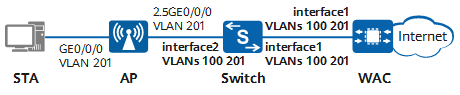

Example for Configuring Wired User Access Through AP Wired Interfaces
Networking Requirements
In actual application scenarios, mobile devices such as laptops and mobile phones can access the Internet in wireless mode, while devices such as PCs and printers can access the Internet in wired mode. This can be achieved by configuring wired user access through AP wired interfaces.
The following figure shows the networking where a WAC connects to and manages APs through a downlink access switch. This example uses a wall plate AP (AirEngine 5760-22W) to provide both wired and wireless access for STAs.

In this example, interface1 and interface2 represent GE0/0/1 and GE0/0/2, respectively.
In this example, Switch uses a common campus switch.

Item |
Data |
|---|---|
IP address of the WAC's source interface |
10.23.100.1/24 |
AP group |
|
AP wired port profile |
Name: wired1 |
DHCP server |
The WAC functions as a DHCP server to assign IP addresses to APs and STAs. |
Gateway and IP address pool range for APs |
VLANIF 100: 10.23.100.1/24 10.23.100.2–10.23.100.254/24 |
Gateway and IP address pool range for wired users |
VLANIF 201: 10.23.201.1/24 10.23.201.2–10.23.201.254/24 |
Precautions
- No ACK mechanism is available for multicast packet transmission over unstable wireless links of air interfaces. For this reason, multicast packets are usually sent at low rates to ensure stable transmission. However, if a large number of multicast packets are sent from the network side, air interfaces may be congested. Therefore, you are advised to configure multicast packet suppression to reduce the impact of numerous low-rate multicast packets on the wireless network. Exercise caution when configuring the rate limit if there are multicast services on the network, as this may affect the multicast services.
Configure multicast packet suppression on interfaces directly connecting the device to APs.
For details on how to configure traffic suppression, see How Do I Configure Multicast Packet Suppression to Reduce Impact of a Large Number of Low-Rate Multicast Packets on the Wireless Network?
- The port isolation configuration is recommended on the ports of the device directly connected to APs. If port isolation is not configured and direct forwarding is used, a large number of unnecessary broadcast packets may be generated in the VLAN, blocking the network and degrading user experience.
- The CAPWAP source interface or source address can be successfully configured only when all of the following security-related configurations exist: PSK for DTLS encryption, user name and password for logging in to an AP, and password for logging in to the global offline management VAP. If any of these configurations does not exist, the system prompts you to supplement related configurations first.
- If DTLS encryption for CAPWAP control tunnels is enabled, APs fail to go online after being imported. In this case, run the capwap dtls no-auth enable command to enable the function of establishing CAPWAP DTLS sessions in none authentication mode so that the APs can obtain security credentials. After the APs go online, run the undo capwap dtls no-auth enable command to disable this function promptly to prevent unauthorized APs from going online.
Configuration Roadmap
The configuration roadmap is as follows:
- Configure network devices so that the access switch, WAC, and APs can communicate with each other.
- Configure the WAC as a DHCP server to assign IP addresses to APs and wired users.
- Configure AP wired interfaces to allow wired users to access the network.
Procedure
- Configure network devices to communicate with each other.
# Add GE0/0/1 and GE0/0/2 on the switch to VLAN 100 (management VLAN) and VLAN 201 (service VLAN for wired users). Set the PVID for the interface directly connected to an AP, and the port isolation configuration is recommended on this interface to reduce unnecessary broadcast traffic.
[HUAWEI] sysname Switch [Switch] vlan batch 100 201 [Switch] interface ge 0/0/1 [Switch-GE0/0/1] portswitch [Switch-GE0/0/1] port link-type trunk [Switch-GE0/0/1] port trunk allow-pass vlan 100 201 [Switch-GE0/0/1] quit [Switch] interface ge 0/0/2 [Switch-GE0/0/2] portswitch [Switch-GE0/0/2] port link-type trunk [Switch-GE0/0/2] port trunk allow-pass vlan 100 201 [Switch-GE0/0/2] port trunk pvid vlan 100 //Configure the PVID for the interface directly connected to the AP. [Switch-GE0/0/2] port-isolate enable group 1 //Configure port isolation on the interface to reduce unnecessary broadcast packets. [Switch-GE0/0/2] quit
# Add GE0/0/1 that connects the WAC to the switch to VLAN 100 and VLAN 201.
[HUAWEI] sysname WAC [WAC] vlan batch 100 201 [WAC] interface ge 0/0/1 [WAC-GE0/0/1] portswitch [WAC-GE0/0/1] port link-type trunk [WAC-GE0/0/1] port trunk allow-pass vlan 100 201 [WAC-GE0/0/1] quit
- Configure the WAC as a DHCP server to assign IP addresses to APs and STAs (wired users).Configure the DNS server as required. The common methods are as follows:
- In the interface address pool scenario, run the dhcp server dns-list ip-address &<1-8> command in the VLANIF interface view.
- In the global address pool scenario, run the dns-list ip-address &<1-8> command in the IP address pool view.
# Configure the WAC to assign IP addresses to APs and STAs based on interface address pools.
[WAC] dhcp enable [WAC] interface vlanif 100 //Configure an interface address pool to assign IP addresses to APs. [WAC-Vlanif100] description manage_ap [WAC-Vlanif100] ip address 10.23.100.1 24 [WAC-Vlanif100] dhcp select interface [WAC-Vlanif100] quit [WAC] interface vlanif 201 //Configure an interface address pool to assign IP addresses to wired users. [WAC-Vlanif201] description manage_pc [WAC-Vlanif201] ip address 10.23.201.1 24 [WAC-Vlanif201] dhcp select interface [WAC-Vlanif201] quit
- Configure APs to go online.
# Create an AP group to which APs with the same configuration are to be added.
[WAC] wlan [WAC-wlan] ap-group name ap-group1 [WAC-wlan-ap-group-ap-group1] quit
# Create a regulatory domain profile, configure the WAC country code in the profile, and bind the profile to the AP group.
[WAC-wlan] regulatory-domain-profile name domain1 [WAC-wlan-regulate-domain-domain1] country-code cn //Configure the WAC country code. Radio features of APs managed by the WAC must conform to local laws and regulations. The default value is cn. Warning: Modifying the country code will clear the channel and power configurations of radios, and requires the APs to be restarted if they run V200R019C10 or earlier. Continue? [Y/N]:y [WAC-wlan-regulate-domain-domain1] quit [WAC-wlan] ap-group name ap-group1 [WAC-wlan-ap-group-ap-group1] regulatory-domain-profile domain1 Warning: This configuration change will clear the channel and power configurations of radios, and may restart APs. Continue?[Y/N]:y [WAC-wlan-ap-group-ap-group1] quit [WAC-wlan] quit
# Configure the WAC's source interface.[WAC] capwap source interface vlanif 100
# Import an AP on the WAC.
[WAC] wlan [WAC-wlan] ap auth-mode mac-auth [WAC-wlan] ap-id 101 ap-mac 00e0-fc76-e320 [WAC-wlan-ap-101] ap-name AP [WAC-wlan-ap-101] ap-group ap-group1 //Add the AP to the AP group ap-group1. Warning: This operation may cause AP to go offline and then online. If the country code changes, it will clear channel, power and antenna gain configurations of the radio, Whether to continue? [Y/N]:y [AC-wlan-ap-101] quit# After the AP is powered on, run the display ap all command to check the AP status. If the State field displays nor, the AP has gone online.
[WAC-wlan] display ap all Total AP information: nor : normal [1] ExtraInfo : Extra information Total: 1 -------------------------------------------------------------------------------------------------------------- ID MAC Name Group IP Type State STA Uptime ExtraInfo -------------------------------------------------------------------------------------------------------------- 101 00e0-fc76-e320 AP ap-group1 10.23.100.254 AirEngine5760-22W nor 0 10S - --------------------------------------------------------------------------------------------------------------
# Configure the AP downlink interface GE0/0/0 to allow wired service packets to pass through.
[WAC-wlan] wired-port-profile name wired1 [WAC-wlan-wired-port-wired1] mode endpoint //Set the AP downlink interface mode to endpoint. The default downlink interface mode of a wall plate AP is endpoint and cannot be changed. Therefore, skip this step in this example. Warning: If the AP goes online through a wired port, the incorrect port mode configuration will cause the AP to go out of management . This fault can be recovered only by modifying the configuration on the AP. Continue? [Y/N]:y [WAC-wlan-wired-port-wired1] vlan pvid 201 //Configure the PVID for the AP downlink interface. This example configures VLAN 201 to transmit wired service packets. Warning: If the AP goes online through a wired port, the incorrect port configuration will cause the AP to go out of management. This fault can be recovered only by modifying the configuration on the AP. Continue? [Y/N]:y [WAC-wlan-wired-port-wired1] vlan untagged 201 //Add the AP downlink interface to VLAN 201 in untagged mode. Warning: If the AP goes online through a wired port, the incorrect port configuration will cause the AP to go out of management. This fault can be recovered only by modifying the configuration on the AP. Continue? [Y/N]:y [WAC-wlan-wired-port-wired1] user-isolate l2 //Configure port isolation on the interface to reduce unnecessary broadcast packets. [WAC-wlan-wired-port-wired1] quit [WAC-wlan] ap-id 101 [WAC-wlan-ap-101] wired-port-profile wired1 gigabitethernet 0 [WAC-wlan-ap-101] quit
# Restart the AP. If the working mode of an AP wired interface is changed, restart the AP for the change to take effect. Skip this step for wall plate APs.
[WAC-wlan] ap-reset ap-id 101 Warning: Reset AP(s), continue?[Y/N]:y [WAC-wlan] quit
Configuration Scripts
Switch
# sysname Switch # vlan batch 100 201 # interface GE0/0/1 portswitch port link-type trunk port trunk allow-pass vlan 100 201 # interface GE0/0/2 portswitch port link-type trunk port trunk pvid vlan 100 port trunk allow-pass vlan 100 201 port-isolate enable group 1 # return
WAC
# sysname WAC # vlan batch 100 201 # dhcp enable # interface Vlanif100 description manage_ap ip address 10.23.100.1 255.255.255.0 dhcp select interface # interface Vlanif201 description manage_pc ip address 10.23.201.1 255.255.255.0 dhcp select interface # interface GE0/0/1 portswitch port link-type trunk port trunk allow-pass vlan 100 201 # capwap source interface vlanif 100 # wlan regulatory-domain-profile name domain1 wired-port-profile name wired1 mode endpoint vlan pvid 201 user-isolate l2 vlan untagged 201 ap-group name ap-group1 regulatory-domain-profile domain1 ap-id 101 type-id 46 ap-mac 00e0-fc76-e320 ap-sn 210235419610CB002378 ap-name AP ap-group ap-group1 wired-port-profile wired1 gigabitethernet 0 # return